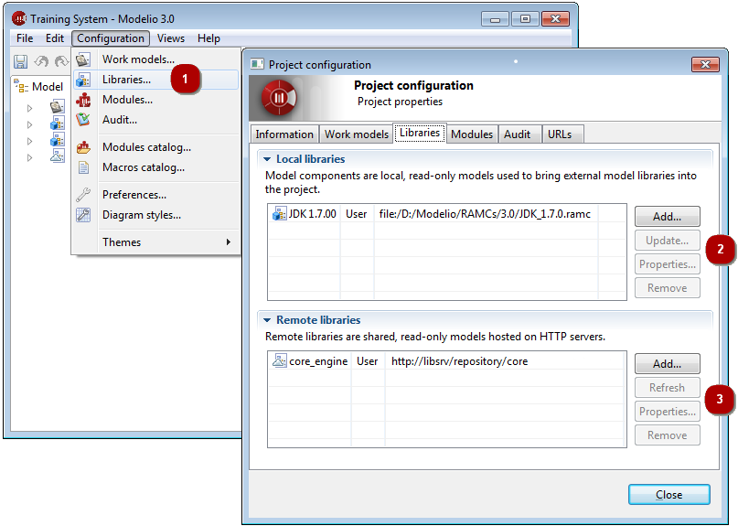
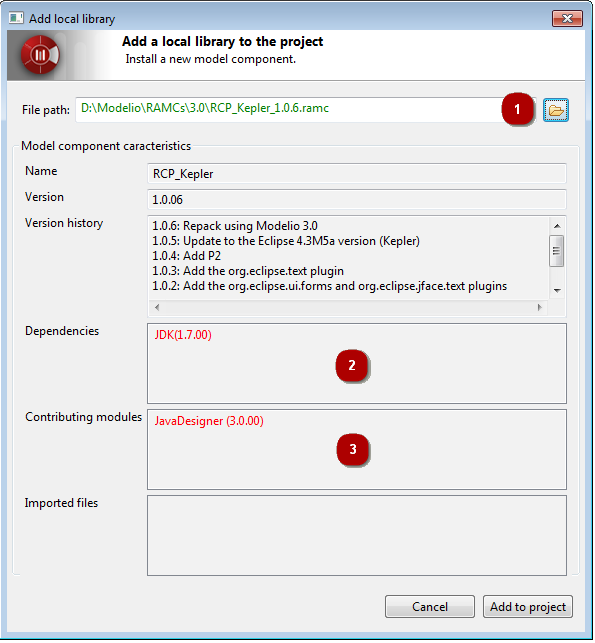
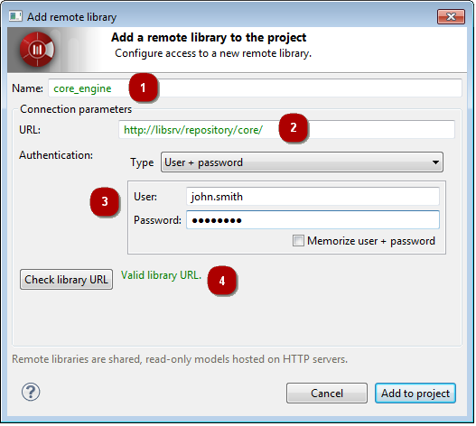

] icon then select the ‘Libraries’ tab.
] icon then select the ‘Libraries’ tab.A model library or library in a Modelio 3 project is a set of non-modifiable model elements that is required for the development of your project, packaged in a single artefact.
A very basic example for Java projects is the JDK. In order to properly model a Java application, many classes from the JDK are used either for extension by inheritance or as parts in the compositions and associations of your model. These required JDK classes are brought into your project via a model library. Obviously, your intention is not to edit or modify the JDK model, which is why the models provided by libraries are read-only.
There are two kinds of libraries in Modelio 3:
You can declare as many additional libraries in your project as required, mixing local and remote ones.
Library management is carried out in the Libraries tab of the Project configurator dialog.

] icon then select the ‘Libraries’ tab.Model components are deployed by users who want to use them in their own projects. When a model component has been deployed in a project, it and the model elements it contains appear in the “Model” view in blue, and are in read- only mode.
To deploy a model component, carry out the steps shown in the screenshots below.

For further information on local libraries (model components), please see “Introducing model components”.
Remote libraries are deployed by users wishing to use them in their own projects. When a remote library has been deployed in a project, it and the model elements it contains appear in the “Model” view in blue, and are in read- only mode.
To deploy a remote library, carry out the steps shown in the screenshots below.

For further information on remote libraries (HTTP models), please see “Introducing remote libraries”.